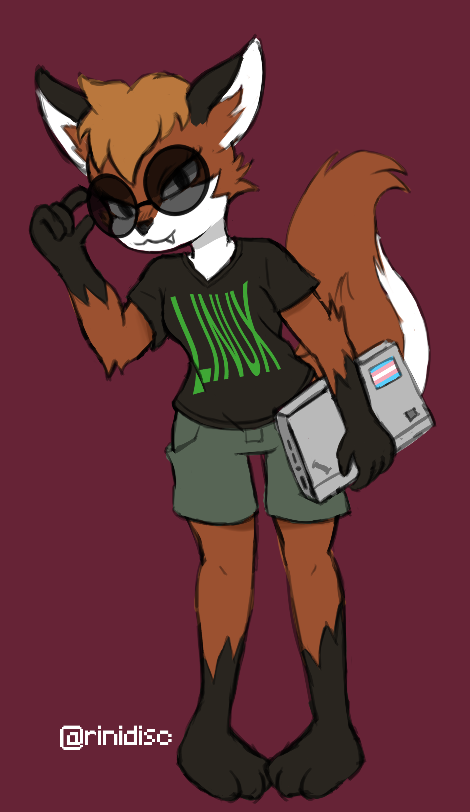
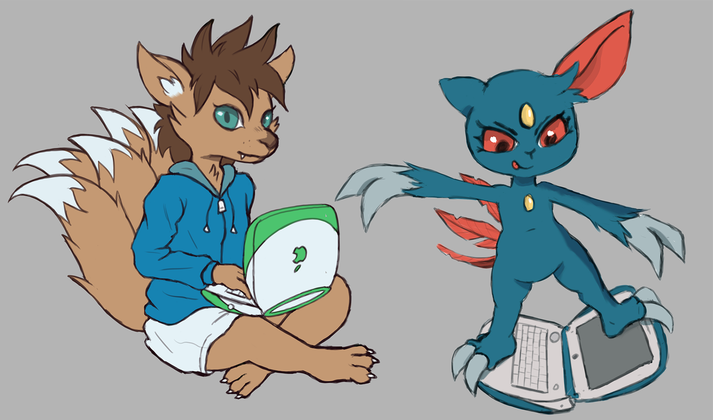
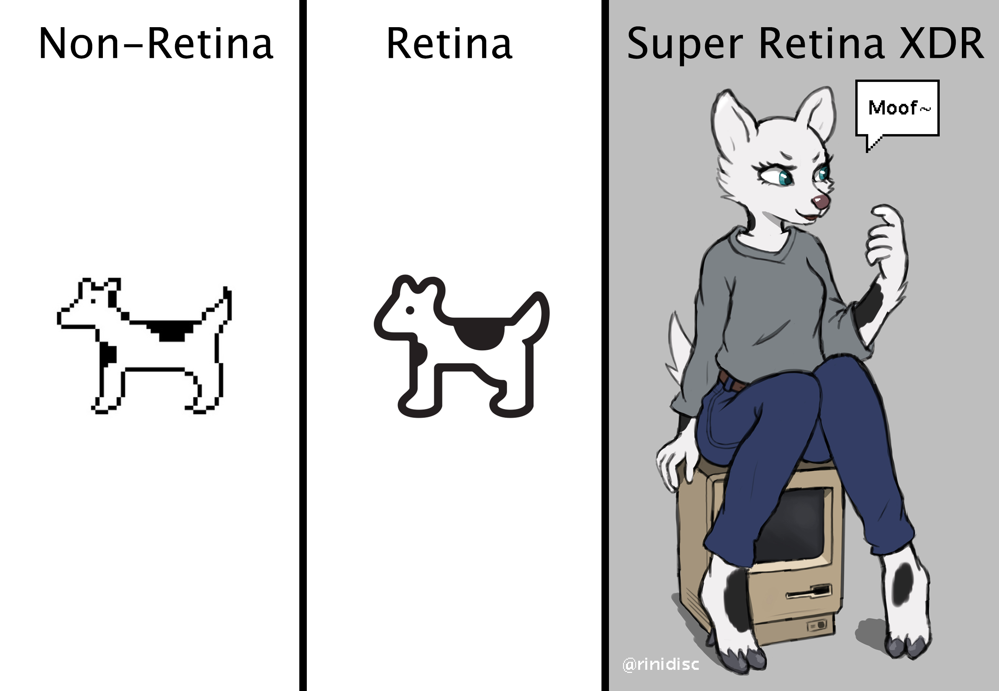
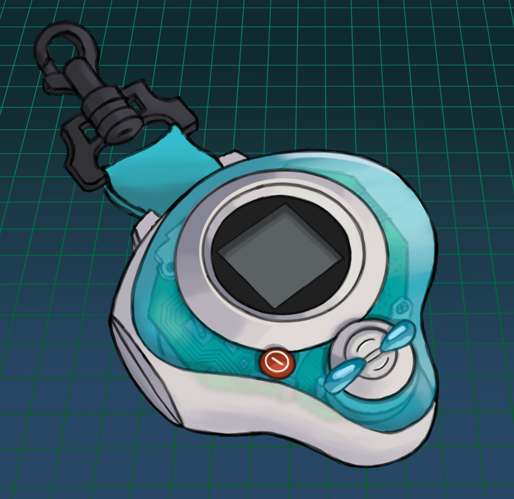
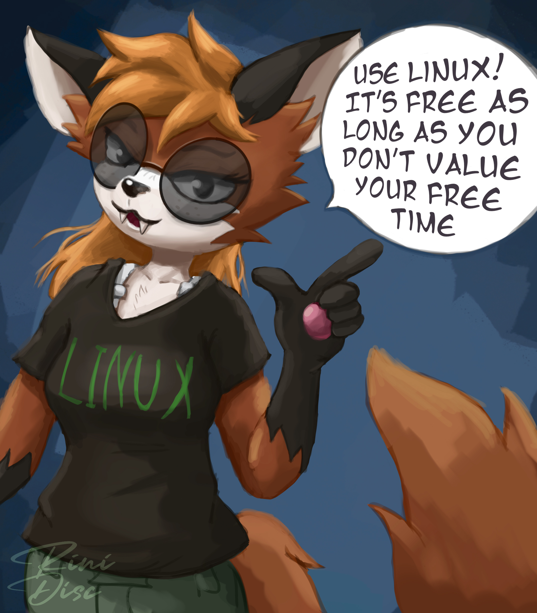
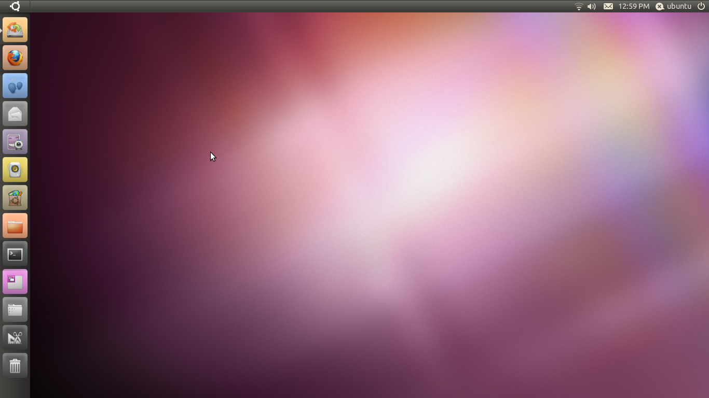
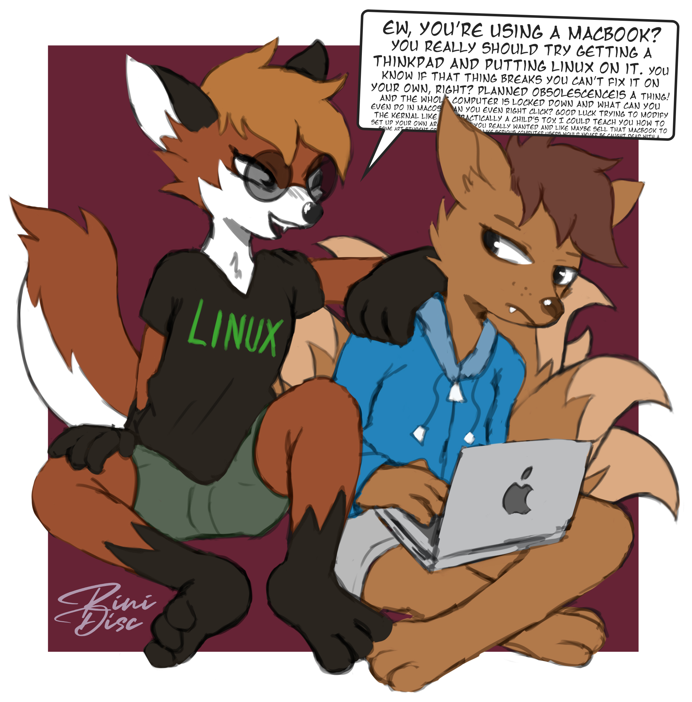
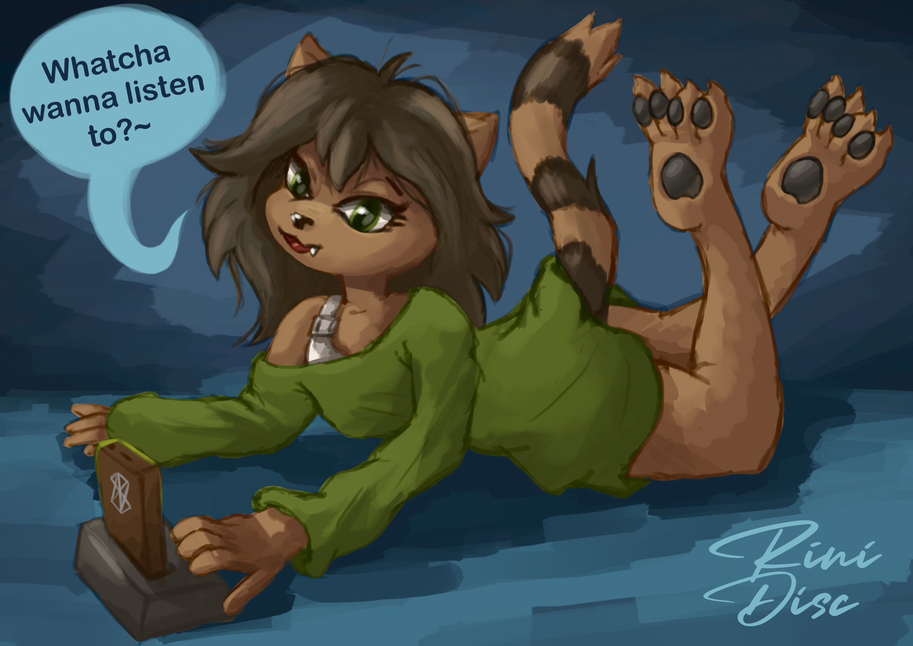
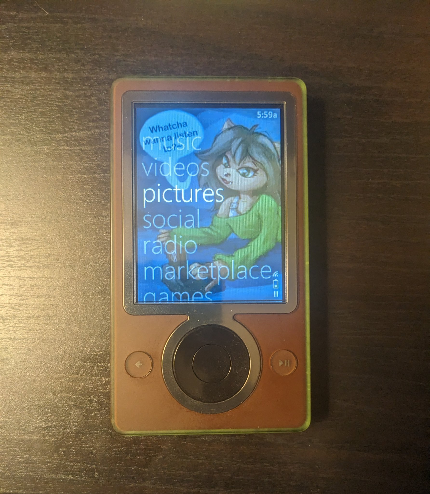

Me and Computers |

I got my first computer sometime in 2002. It was a Dell running Windows XP. Depending on what year it was, I was either more interested in making art with my computer, or doing programmy stuff with it. I really could never decide if I was more into art or sciences. This persists to this day.
When I was in late elementary school and early middle school, I was into doing computer animations and stop-motion films. I didn't have any good software for this, but that didn't stop me. From using iMacs in elementary school, my clunky Dell desktop, to an eventually Vista machine, then onto Windows 7. It may be surprising that one of things I didn't do very much with a computer was draw.
I first got into programming with GameMaker 7, after reading about AM2R using the same software back in 2006-2007. And I played around with Visual Basic and some Linux software that a friend got me into. I was always reading the latest tech news in what ended up being a very exciting time for technology.
I made my own text editor at that time (cause I wanted to get into being an author as well, but that's a whole other thing), and messed around with UI design. Customizing Linux was a lot of fun, and I even modded Windows Vista to look like Windows 7 and OS X Leopard so I could pretend I had those other operating systems.
This page is divided into sections to go over some of my tech interests and show off some art I've done for computers.
Apple

I know it's cool to hate Apple these days, and I know there's good reasons for it, but there's just something about the retro Apple aesthetic that still appeals to me. From the bondi blue iMac, to the pinstriped UI, to the brushed metal and beyond. It's cozy and warm, and definitely leeched into my art preferences.
Some of my favorite apple designs are:
- iBook G3 (Clamshell)
- iMac G3 (Flavors)
- iPhone 4
- iPod Nano

Of course I had to draw an anthro version of Clarus the DogCow.

Digivice in the style of an iMac G3. Digimon's been around so long that there were actual devices made in this transparent colored plastic style, but I had a lot of fun drawing it. The motherboard under there is mostly accurate to a real D-Power Digivice.

Linux |

First time I used Linux was in a school classwhere where a few of the computers were running Ubuntu. I had some passing interest in it, and tried out running a version on my own computer. I installed a Netbook Remix of Maverick Meerkat on my laptop alongside of Windows 7.
I played around with using Ubuntu, and while I should have gotten more into the programming side of it, I was having way too much fun customizing the computer. Themes and sounds and animations. There was nothing cooler at the time than wobbly windows and 3D cube rotations.


Zune |
My first portable MP3 player was some cheap flash player that held about 10-15 songs and even had a built-in radio that I got for Christmas when I was a little kid.
But that's not important. My first real MP3 player was...an iPod Nano. It was such a pretty blue color and I loved it a lot. The only thing I remember hating about it was that if you turned the thing sideways, you always got coverflow which meant it was hard to adjust the volume in my pocket. But that iPod didn't last long as it was no match for the washing machine.
So then I got a Zune. And, you know what? I liked it more than my iPod. The UI was really cool and I loved the colors and text and album art. Apple's looked so much more stiff and office-like in comparison.

I still love the aesthetic it had. Microsoft eventually watered down their design language that by the time Windows 10 came out, everything just looked like DOS software, but the early days were really something special.
But what's so great about it is that, unlike most modern software, it doesn't look corporate. It doesn't look like a slideshow made by business executives. It looks fun and playful and that's what music should be.

